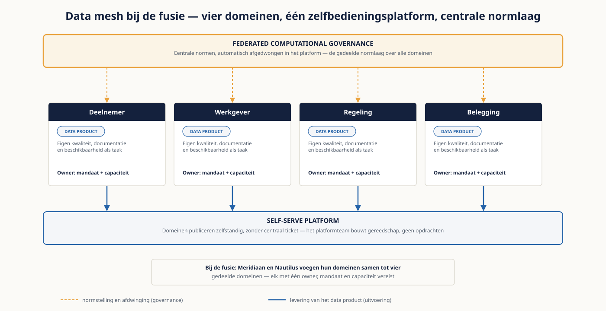
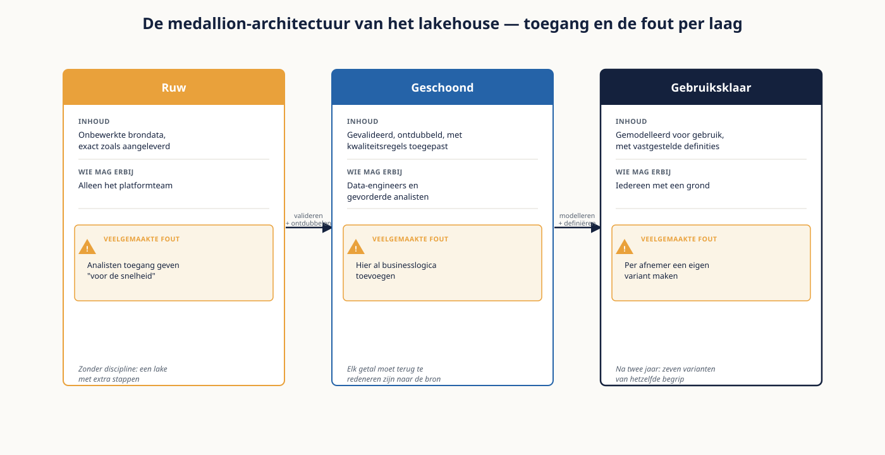

Deel 23 — Moderne dataplatformparadigma’s
Niveau 3 — Meesterschap · Reader
Voorbereiding, geen vervanging
Deze cursusmap is onafhankelijk ontwikkeld door Ductus B.V. Ductus is niet gelieerd aan, geaccrediteerd door of goedgekeurd door DAMA International, IIBA, IAPP, de EDM Association of Microsoft.
Dit materiaal bereidt voor op de genoemde examens en vervangt het officiële examenmateriaal niet. Bodies of knowledge, handboeken en examenblueprints worden hier niet gereproduceerd; deelnemers schaffen die bronnen zelf aan.
Alle genoemde merken zijn eigendom van hun respectieve houders. Examengegevens gecontroleerd in augustus 2026 — verifieer vóór inschrijving bij de bron.
1. Waar dit deel over gaat
Op de tafel van de CTO liggen drie architectuurvoorstellen. Het eerste bepleit een data mesh met domeineigenaarschap. Het tweede een data fabric met actieve metadata over beide clouds. Het derde stelt voor om het lakehouse van Nautilus uit te breiden en het platform van Meridiaan uit te faseren. Alle drie zijn intern consistent, alle drie kosten miljoenen, en alle drie beloven hetzelfde.
Dit deel gaat over het beoordelen van die voorstellen. Niet over welk paradigma het beste is — die vraag heeft geen algemeen antwoord — maar over welke vraag elk paradigma beantwoordt, welke voorwaarde het stelt, en waarom de mode vrijwel altijd het verkeerde argument is.
Leerdoelen
- Je herkent de vier paradigma’s in een leveranciersvoorstel, ook als de termen anders zijn.
- Je benoemt per paradigma de organisatorische voorwaarde die het stelt.
- Je beoordeelt of een organisatie die voorwaarde vervult, en wat er gebeurt als dat niet zo is.
- Je ontwerpt data contracts op domeinniveau als architectuurmechanisme.
- Je richt federated computational governance in en benoemt wat er niet automatiseerbaar is.
- Je analyseert dataplatformkosten en ontwerpt een maatregel die gedrag verandert.
- Je adviseert de CTO in een notitie die de keuze scherp maakt in plaats van een voorkeur uitspreekt.
2. Data mesh
Data mesh is geen technologie maar een organisatiemodel met technische consequenties. Vier principes, waarvan de eerste twee organisatorisch zijn en de laatste twee technisch.
| Principe | Wat het inhoudt | Wat het vraagt |
|---|---|---|
| Domeineigenaarschap | Domeinen bezitten hun eigen data, inclusief de kwaliteit | Data owners met mandaat én capaciteit — niet alleen een naam |
| Data as a product | Data wordt geleverd als product, met afnemers en een productverantwoordelijke | Iemand die kwaliteit, documentatie en beschikbaarheid als taak heeft |
| Self-serve platform | Domeinen kunnen zelfstandig publiceren zonder centraal ticket | Een platformteam dat gereedschap bouwt in plaats van opdrachten uitvoert |
| Federated computational governance | Centrale normen, automatisch afgedwongen in het platform | Normen die in code zijn uit te drukken — en governance die dat aankan |
De veelgemaakte fout is data mesh implementeren als technische inrichting: domeinen krijgen een eigen ruimte op het platform en heten voortaan producteigenaar. Zonder mandaat en capaciteit is dat een naamswijziging, en na achttien maanden staat er een gedecentraliseerd landschap zonder centrale normen — het slechtste van beide werelden.
De toets voor data mesh
Kan een domein vandaag een gegeven weigeren te leveren omdat het niet aan zijn kwaliteitsnorm voldoet, en houdt dat stand? Is het antwoord nee, dan is er geen domeineigenaarschap en levert data mesh niets. Dat is een governancevraag, en hij gaat vooraf aan elke platformkeuze.

3. Data fabric
Data fabric benadert hetzelfde probleem van de andere kant: in plaats van eigenaarschap te decentraliseren, legt het een intelligente laag over een verspreid landschap. De kern is actieve metadata — metadata die niet alleen beschrijft maar ook aanstuurt, zoals in deel 13.
- Automatische ontdekking van bronnen en schema’s, met lineage die zichzelf bijhoudt.
- Beleid dat aan metadata hangt en dat bij toegang wordt afgedwongen, ongeacht waar de data staat.
- Virtualisatie of federatie van bevragingen over bronnen heen, zodat kopiëren niet altijd nodig is.
- Aanbevelingen op grond van gebruikspatronen: welke datasets horen bij elkaar, wie gebruikt wat.
Bij een fusie met twee clouds is fabric aantrekkelijk, omdat het geen consolidatie vooronderstelt. De voorwaarde is echter zwaar: de metadata moet kloppen en actueel zijn. Een fabric op een landschap zonder werkend begrippenkader en zonder lineage is een dure laag die vooral onbetrouwbare aanbevelingen doet.
4. Lakehouse en medallion
Het lakehouse combineert de goedkope, flexibele opslag van een lake met de bevraagbaarheid en transactionele garanties van een warehouse. De gelaagde inrichting — ruw, geschoond, gebruiksklaar — is minder een technologie dan een afspraak.
| Laag | Wat erin staat | Wie mag erbij | Veelgemaakte fout |
|---|---|---|---|
| Ruw | Onbewerkte brondata, exact zoals aangeleverd | Alleen het platformteam | Analisten toegang geven "voor de snelheid" |
| Geschoond | Gevalideerd, ontdubbeld, met kwaliteitsregels toegepast | Data-engineers en gevorderde analisten | Hier al businesslogica toevoegen |
| Gebruiksklaar | Gemodelleerd voor gebruik, met vastgestelde definities | Iedereen met een grond | Per afnemer een eigen variant maken |
De waarde van de gelaagdheid zit erin dat je bij elk getal kunt terugredeneren naar de bron. Zonder die discipline is het onderscheid tussen de lagen alleen een mappenstructuur — en dan heb je een lake met extra stappen.
De laatste fout in de tabel is de sluipende: elke afnemer die een eigen variant krijgt in de gebruiksklare laag, ondermijnt de semantische laag uit deel 13. Na twee jaar zijn er zeven varianten van hetzelfde begrip, en is de organisatie terug bij de drie afwijkende deelnemersaantallen uit niveau 1.

5. Event-driven en streaming
Een event-driven architectuur legt gebeurtenissen vast in plaats van standen. Dat is een fundamenteel andere manier van kijken, en hij is krachtig op precies de plek waar een pensioenuitvoerder het nodig heeft: reconstrueerbaarheid.
- Een gebeurtenislog is per definitie bitemporeel: je weet wat er gebeurde en wanneer het is vastgelegd. Dat lost het probleem uit deel 12 structureel op.
- Meerdere afnemers kunnen dezelfde gebeurtenissen verwerken zonder elkaar te hinderen — dat past bij een gefuseerd landschap met twee sets afnemers.
- De prijs is complexiteit: volgorde, dubbele verwerking, en het feit dat je de huidige stand moet afleiden in plaats van opvragen.
- Streaming is niet hetzelfde als event-driven. Je kunt gebeurtenissen in batch verwerken; de vraag of het realtime moet, staat er los van — en het antwoord is meestal nee, zoals in deel 3.
Voor de fusie is de relevante vraag niet of Meridiaan streaming nodig heeft, maar of de gebeurtenissen uit beide landschappen op één log samenkomen. Doen ze dat, dan is de reconstructie over de gecombineerde portefeuille mogelijk. Doen ze dat niet, dan blijft die capability een gat — precies het gat uit deel 22.
6. Data contracts als architectuurmechanisme
In deel 15 was een data contract een afspraak tussen een leverende en een afnemende partij. Op architectuurniveau is het meer: het is het mechanisme waarmee je decentralisatie mogelijk maakt zonder de samenhang te verliezen.
| Zonder contracts | Met contracts |
|---|---|
| Elke wijziging bij de bron breekt onvoorspelbaar iets stroomafwaarts | Een schemawijziging is een contractwijziging, met aankondigingstermijn |
| Kwaliteit is een verwachting | Kwaliteit is een afspraak met een drempel en een gevolg |
| Betekenis staat impliciet in de code van de afnemer | Betekenis verwijst naar het begrippenkader |
| Decentralisatie leidt tot divergentie | Decentralisatie is mogelijk binnen afgesproken grenzen |
Dat laatste is de architecturale functie. Data mesh zonder contracts is decentralisatie zonder rem; de domeinen drijven binnen twee jaar uit elkaar. Met contracts is decentralisatie beheerst: een domein mag zijn eigen keuzes maken, mits het levert wat het heeft toegezegd.
Wat er op architectuurniveau bij komt
- Versionering van contracten, met een afgesproken periode waarin twee versies naast elkaar bestaan.
- Automatische toetsing: het contract wordt bij elke levering gecontroleerd, niet jaarlijks besproken.
- Een register van contracten, zodat je kunt zien wie van wie afhangt — dat is lineage op afspraakniveau.
- Een escalatiepad dat aansluit op de governance uit deel 16, met dezelfde termijnen.
7. FinOps voor data
In de cloud is elke bevraging een kostenpost. Dat verandert gedrag op een manier die op locatie niet gold, en het is de reden dat kostenbeheersing een architectuurvraagstuk is geworden in plaats van een inkoopvraagstuk.
| Patroon | Wat er gebeurt | Maatregel die werkt |
|---|---|---|
| Dashboard dat elk uur ververst | Kosten lopen op zonder dat iemand het merkt | Verversfrequentie afleiden van het besluitritme — zie deel 19 |
| Analist die de volledige tabel scant | Eén query kost meer dan een maand opslag | Partitionering plus voorlichting; verbieden werkt niet |
| Elke afdeling een eigen kopie | Opslag- en verwerkingskosten vermenigvuldigen | Gedeelde gebruiksklare laag met doorbelasting |
| Geen enkele doorbelasting | Niemand voelt de kosten van zijn eigen gedrag | Doorbelasten per domein, ook als het administratief is |
Doorbelasting verandert gedrag, ook zonder echt geld
De sterkste FinOps-maatregel is zichtbaarheid: een maandelijks overzicht per domein van verbruikte rekenkracht, met de vergelijking tussen domeinen erbij. Dat verandert gedrag voordat er één euro verschuift, omdat niemand onderaan wil staan. Echte doorbelasting werkt ook, maar kost een discussie over verrekenprijzen die je bij een fusie niet wilt voeren.
8. Kiezen
De vier paradigma’s beantwoorden verschillende vragen. Die vraag is het criterium, niet de volwassenheid van de technologie.
| Paradigma | Beantwoordt de vraag | Voorwaarde | Faalt bij |
|---|---|---|---|
| Data mesh | Hoe schaal ik zonder centraal knelpunt? | Domeinen met mandaat en capaciteit | Governance op niveau 1 of 2 |
| Data fabric | Hoe ontsluit ik een verspreid landschap zonder te consolideren? | Kloppende, actuele metadata | Ontbrekend begrippenkader of lineage |
| Lakehouse | Hoe combineer ik flexibiliteit met betrouwbaarheid? | Discipline in de gelaagdheid | Teams die de lagen omzeilen |
| Event-driven | Hoe maak ik reconstrueerbaar wat er is gebeurd? | Bereidheid om standen af te leiden | Organisaties die realtime met event-driven verwarren |
Waarom de mode het verkeerde argument is
- Elk paradigma is ontstaan bij organisaties met een specifiek probleem. Data mesh komt uit bedrijven met honderden domeinen en een centraal dataplatform dat het niet meer bijbeen; Meridiaan heeft vijf domeinen.
- Een leverancier verkoopt het paradigma waarin zijn product het sterkst is. Dat is legitiem en het is geen advies.
- De organisatorische voorwaarde is duurder dan de technische inrichting, en hij staat zelden in het voorstel.
- Paradigma’s sluiten elkaar niet uit. Een lakehouse met domeineigenaarschap en data contracts is een verdedigbare tussenvorm en wordt zelden zo genoemd.
9. Coëxistentie en migratiepad
Bij een fusie is de realistische uitkomst zelden één paradigma. Twee platformen bestaan achttien maanden naast elkaar, en de vraag is hoe je dat beheerst in plaats van hoe je het vermijdt.
- Bepaal per domein welk platform leidend is, met dezelfde volgorde als in deel 22: definitie, bron, dan techniek.
- Leg een contract tussen de platformen: wat levert het ene aan het andere, met welke kwaliteit en welke actualiteit?
- Zorg dat de semantische laag over beide heen ligt, ook als de opslag gescheiden blijft. Eén definitie, twee bronnen.
- Bepaal het moment waarop de coëxistentie eindigt, en de voorwaarde die dan vervuld moet zijn.
- Reken de dubbele kosten door en maak ze zichtbaar; anders wordt de tijdelijke situatie permanent.
10. Vijf fouten op dit niveau
- Data mesh implementeren als technische inrichting zonder mandaat en capaciteit bij de domeinen.
- Een fabric leggen over een landschap zonder werkende metadata.
- De gelaagdheid van het lakehouse als mappenstructuur behandelen.
- Event-driven en realtime met elkaar verwarren.
- Een paradigma kiezen op grond van het voorstel dat het beste is geschreven.
11. Examenrelevantie
Dit deel bereidt voor op het technologiearchitectuurcomponent van DCAM en op de optionele Microsoft DP-600. Voor het CDMP raakt het Data Architecture en Data Storage & Operations. De paradigma’s zelf zijn praktijkkennis; het DMBOK behandelt ze op hoofdlijnen.
Aandachtspunten
- De vier principes van data mesh, en welke daarvan organisatorisch zijn.
- Het onderscheid tussen data fabric en data mesh: centralisatie van intelligentie versus decentralisatie van eigenaarschap.
- De gelaagde inrichting van een lakehouse en de functie van elke laag.
- Data contracts als mechanisme voor beheerste decentralisatie.
- Engels: data product, self-serve platform, federated computational governance, active metadata, medallion architecture, data contract, chargeback.
Studiemateriaal bij dit deel
Voor DCAM: het framework en de training zijn exclusief beschikbaar voor leden van de EDM Association, via het Knowledge Portal.
Voor het CDMP: de hoofdstukken over data architecture en data storage and operations in de DAMA-DMBOK2 Revised Edition.
Voor DP-600: de studiegids en leerpaden op learn.microsoft.com. Let op de jaarlijkse verlengingsplicht van Microsoft-certificeringen.
De paradigma’s zelf zijn het best te bestuderen bij de oorspronkelijke auteurs; leveranciersmateriaal beschrijft doorgaans het paradigma waarin het eigen product het sterkst is.
Dit materiaal reproduceert geen van deze bronnen en vervangt ze niet.